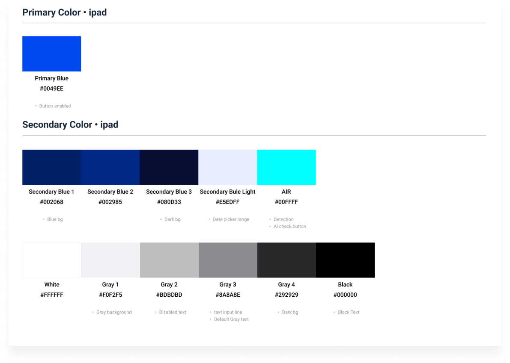
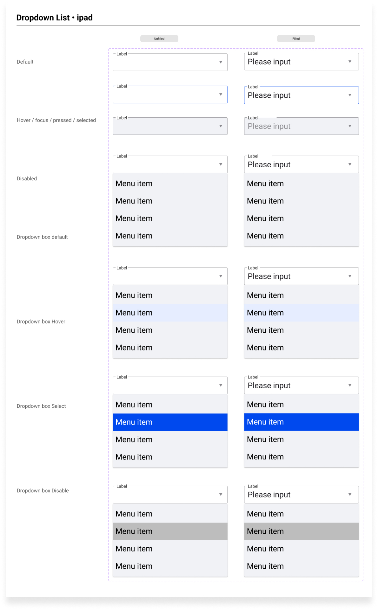

Design Background
This app is designed for the detection of industrial field meter heads. Users can download the corresponding app from the Apple Store, enter the relevant meter head values, and utilize AI for detection to obtain the status of the meter head values.
Role and Collaborations
As a product designer, I collaborate with team members, product managers, and developers to define user workflows, conduct visual design, and ensure consistency and cohesion across various aspects of the product.
Team
Product Designer - Windy Wu
Ios Engineer
Platform
iPad
Tools / Skill
Figma, Photoshop, Illustrator
Design Goal
Usability
Design the user interface to be intuitive, allowing users to easily navigate without the need for extensive training.
Customization and Configuration
Provide users with a certain degree of flexibility, allowing them to define header values on their own to meet their detection requirements.
Brand Consistency
Ensure the design style, colors, and imagery of the app are consistent with the brand image, thereby enhancing brand identity.
Design Language System
In the definition of the product brand, blue is primarily defined as the main color of the product, supplemented by black, white, and gray as its secondary color palette.
Because the product will incorporate app-related input functionalities, various types of states are defined for dropdown-related settings input. This makes it easier for product development and design to be extended.
Flow
First, define the preliminary user flow and discuss the initial process diagram with relevant stakeholders. Then, confirm details related to gathering user data before starting UI design.
Based on the preliminary flow content, write corresponding specifications and details, and draw the corresponding product flow diagram to allow engineers to confirm the flow direction and proceed with production.
User interface
Login
The login page allows users to log in using their email account and password. It also provides options for remembering login credentials and resetting forgotten passwords. Users can also explore the application without logging in through the guest mode feature. Upon accessing the login page, users are presented with corresponding options for available processes.
Historcal page
In guest mode, access to the browsing history is restricted to a limited view of previously accessed content. However, after logging in, users have unrestricted access to their complete browsing history, and they can filter the history based on time intervals.
Procedure page
In guest mode, during the process, users will be prompted to set the gauge values. Then, AI will be utilized to detect and display the correct values accordingly.
Result and report page
After detecting the gauge values, the system will display whether the values are correct. At the end of the process, users can view detailed information.
Take away
Through defining the user flow in the early stages of design and development, it enables each member of the team to raise corresponding development questions, facilitating smoother development in the later stages.
Design feedback is crucial, and due to the tight schedule this time, some aspects of design iteration weren't fully refined. In future projects of this nature, it's important to allocate more time for design iteration, allowing for a more comprehensive product development process.
For this project, continuous development meetings were held to ensure ongoing communication and collaboration among team members. These meetings aimed to address any new issues that arose and ensure the smooth progress of the entire development process. Overall, the development workflow proceeded smoothly.